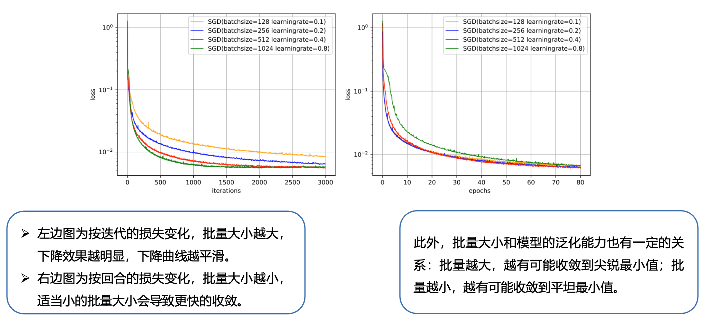
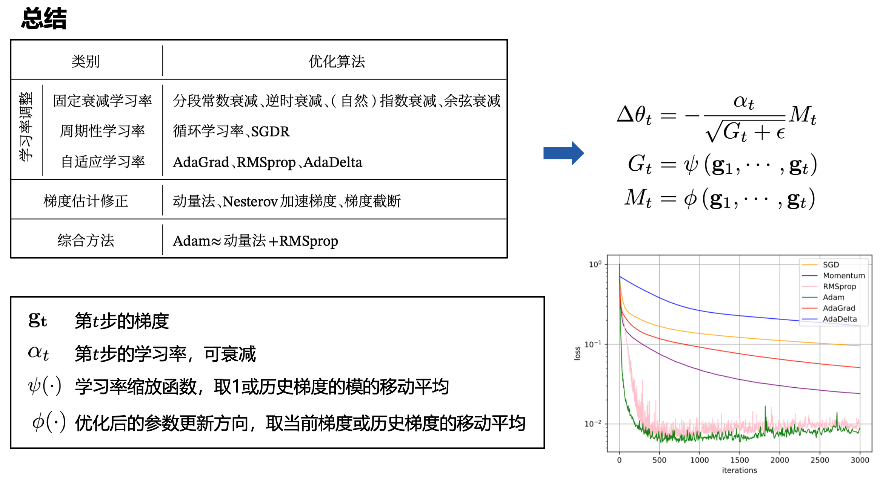

训练目标
- 期望风险(Expected Risk)：评估当前模型（也就是映射函数）在真实数据分布下的预测损失Loss的期望。前提是已知真实数据分布下的误差，那也就是说模型的真实误差。
- 我们所能得到的观察数据是真实数据的一个真子集，因此可以利用模型在观察数据上的误差来近似反应模型在真实数据上的拟合能力，将这个误差称为经验误差。将在所有观察数据中得到的平均误差称为经验风险(Empirical Risk)
- 过拟合是因为模型在训练数据集上拟合能力太强，反而对于新的测试数据表现不佳。根据奥卡姆剃刀原则需要限制模型的能力(模型的参数量)，从而提高泛化能力，因此，我们追求的是结构风险最小化。
- 奥卡姆剃刀原则：如无必要，勿增实体。简单的模型泛化能力更好，如果有两个性能相近的模型，我们应该选择更简单的模型。

损失函数

偏差方差
- 为了避免过拟合，我们经常会在模型的拟合能力和复杂度之间进行权衡。
- 方差一般会随着训练样本的增加而减少。当样本比较多时，方差比较少，这时可以选择能力强的模型来减少偏差。
- 随着模型复杂度的增加，模型的拟合能力变强，偏差减少而方差增大，从而导致过拟合。
数据集划分
- 把数据集全部作为训练集，然后用这个训练集训练模型，用训练集验证模型。
- 选择训练集误差最小的模型
- 把数据集随机分为训练集和测试集，训练集训练模型，测试集验证模型。
- 选择测试集误差最小的模型
- 把数据集分为训练集、验证集和测试集，训练集训练模型，验证集验证模型。
- 根据情况不断调整模型，选择出最好的模型。再用训练集和验证集训练出一个最终的模型，最后用测试集评估最终的模型。
- 交叉验证把原始数据集平均分为K组不重复的子集，每次选择K-1组子集作为训练集，剩下一组子集作为验证集。
- K次实验得到K个模型，将K个模型在各自验证集上的错误率的平均作为分类器的评价
评价指标
-
典型指标
- 准确率（Accuracy）
- 准确率和错误率是在所有类别上整体的性能平均，由于数据类别的分布不平衡性，例如正负比例为9:1，那么模型只需要将所有样本全部分类为正例，也能获得90%的准确率。如果希望对每个类别都进行性能的评估，就需要计算精确率和召回率。
- 错误率（Error Rate）
- 精确率（Precision）
- $$P=\frac{TP}{TP+FP}$$
- 召回率（Recall）
- $$P=\frac{TP}{TP+FN}$$
- F值（F Measure）
- F值是一个综合指标，为精确率和召回率的调和平均
- $$f=\frac{(1+\beta ^{2})\times P\times R}{\beta ^{2}\times P+R}$$
- $$F=f(\beta =1)$$
- 宏平均（Macro Average）
- 微平均（Micro Average）
- 准确率（Accuracy）
- 在实际应用中，我们也可以通过调整分类模型的阈值来进行更全面的评价，比如AUC(Area Under Curve)、ROC(Receiver Operating Characteristic)曲线、PR(Precision-Recall)曲线等。此外，很多任务还有自己专门的评价方式，比如TopN准确率。
网络优化
-
梯度下降算法
- 批量梯度下降 Batch Gradient Descent
- 又叫Vanilla Gradient Descent，每次训练更新模型时采用的是整个训练集合的所有样本点。
- 优点
- 每次更新朝着正确的方向进行
- 保证收敛于极值点，凸函数收敛于全局极值点
- 缺点
- 学习时间太长
- 消耗大量内存
- 随机梯度下降 Stochastic Gradient Descent
- 对每个训练样本进行参数更新。因为批量梯度下降在每次参数更新前重新计算类似样本的梯度，因此会对大数据集会有一些冗余的计算。而随机梯度下降由于每次只选取一个样本，所以会消除这种冗余
- 优点
- 运行速度快，允许在线更新模型
- 会跳出局部极小值点到另一个更好的局部极小值点
- 缺点
- 每次更新可能并不按照正确的方向进行
- 以较大的方差频繁地更新，目标函数剧烈波动
- 小批量梯度下降 Mini-Batch Gradient Descent
- 在每次更新模型时使用的样本量做了权衡，即每次用多个样本组成的数据集来计算梯度并更新
- 优点
- 降低了参数更新的方差，获得更加稳定的收敛
- 利用深度学习库中常用的高度优化的矩阵优化方法
- 缺点
- 学习率的选择困难
- 会陷入无限次的局部极小值，或鞍点
- 影响效果的主要因素
- 批量大小选择
- 一般而言，批量大小不影响随机梯度的期望，但是会影响随机梯度的方差。批量大小越大，随机梯度的方差越小，引入的噪声也越小，训练也越稳定，因此可以设置较大的学习率。而批量大小较小时，需要设置较小的学习率，否则模型会不收敛。
- 线性缩放规则(Linear Scaling Rule)：当批量大小增加𝑚𝑚倍时，学习率也增加𝑚𝑚倍。线性缩放规则往往在批量大小比较小时适用，当批量大小非常大时，线性缩放会使得训练不稳定。

- 学习率
- 学习率过大，模型不会收敛；过小的话，收敛速度太慢。
- 学习率衰减
- 从经验上看，学习率在刚开始的时候需要设置大一点保证收敛的速度，在收敛到最优点附近时要小一点避免来回震荡。
- 分段常数衰减（Piecewise Constant Decay）
- 逆时衰减（Inverse Time Decay）
- 指数衰减（Exponential Decay）
- 自然指数衰减（Natural Exponential Decay）
- 余弦衰减（Cosine Decay）
- 学习率预热
- 训练刚开始的时候模型的参数是随机设置的，因此在使用Mini-Batch梯度下降法时，将学习率设置较大的情况下梯度也往往比较大，使得训练不稳定。为了提高训练的稳定性，可以在最初几轮的时候，采用比较小的学习率，等梯度下降到一定程度之后再恢复到初始的学习率，这种方法称为学习率预热。当预热过程结束，再选择一种学习率衰减方法来逐渐降低学习率。
- 周期性学习率调整
- 为了使得梯度下降法能够逃离鞍点或尖锐最小值，一种经验性的方式是在训练过程中周期性地增大学习率。当参数处于尖锐最小值附近时，增大学习率有助于逃离尖锐最小值；当参数处于平坦最小值附近时，增大学习率依然有可能在该平坦最小值的吸引域(Basin of Attraction)内。因此，周期性地增大学习率虽然可能短期内损害优化过程，使得网络收敛的稳定性变差，但从长期来看有助于找到更好的局部最优解。
- 自适应调整学习率方法
- AdaGrad
- 借鉴L2正则化的思想，每次迭代时自适应地调整每个参数的学习率，梯度平方越大，学习率越大。
- 缺点：经过一定次数迭代依然没有找到最优点时，由于学习率已经非常小，很难再继续找到最优点。
- RMSprop
- 在有些情况下避免AdaGrad算法中学习率不断单调下降以至于过早衰减的缺点
- AdaDelta
- 也是AdaGrad算法的一个改进。和RMSprop算法类似AdaDelta算法通过梯度平方的指数衰减移动平均来调整学习率。
- AdaGrad
- 梯度估计修正
- 在Mini-Batch梯度下降算法中，每次选取的样本数量比较小，损失会呈现震荡的方式下降(每次迭代时梯度的估计值和整个训练集上的最优梯度并不一致)。一种有效的方式是通过使用最近一段时间内的平均梯度来代替当前时刻的随机梯度来作为参数更新的方向，从而提高优化速度。
- Momentum算法
- 利用之前积累的的动量来替代真正的梯度，每次迭代的梯度可以看作是加速度。在第N次迭代时，计算负梯度的“加权移动平均”作为参数的更新方.
- 每个参数的实际更新差值取决于最近一段时间内梯度的加权平均值。当某个参数在最近一段时间内的梯度方向不一致时，其真实的参数更新幅度变小；相反，当在最近一段时间内的梯度方向都一致时，其真实的参数更新幅度变大，起到加速作用。
- Nesterov加速梯度法
- 是一种对动量法的改进。
- Adam算法
- 可以看作Momentum算法和RMSprop算法的结合，不但使用动量作为参数更新方向，而且可以自适应调整学习率。
- 梯度截断法
- 在深度神经网络或循环神经网络中，除了梯度消失之外，梯度爆炸也是影响学习效率的主要因素。在基于梯度下降的优化过程中，如果梯度突然增大，用大的梯度更新参数反而会导致其远离最优点。为了避免这种情况，当梯度的模大于一定阈值时，就对梯度进行截断。
- 总结

- 批量大小选择
- 批量梯度下降 Batch Gradient Descent
-
名词解释
- Epoch：使用训练集全部数据对模型进行一次完整的训练，称为“一代训练”。
- Batch：使用训练集中一小部分样本利用MBGD更新一次参数，这部分样本被称为“一批数据”。
- Iteration：使用一个Batch的数据对模型进行一次参数更新的过程，称为“一次训练”。